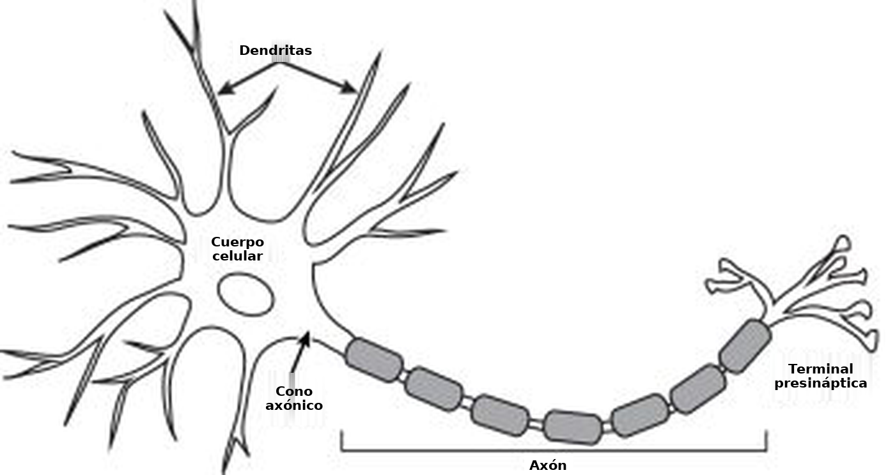
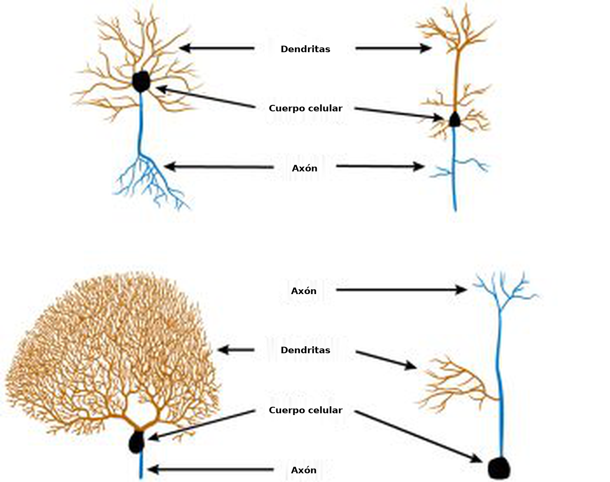
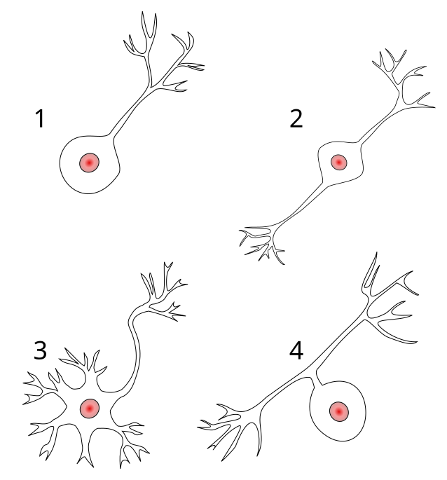
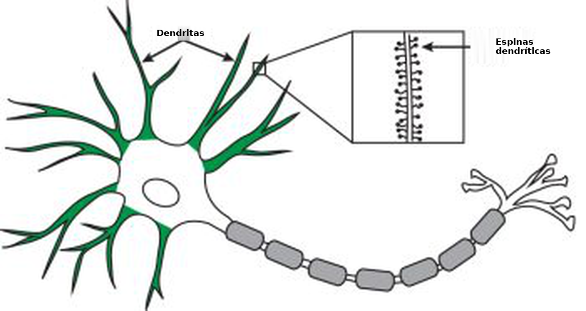
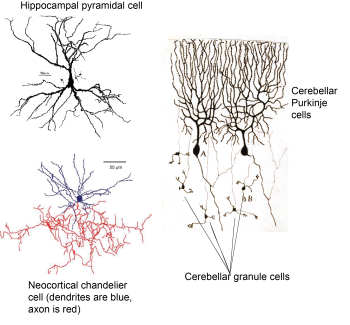
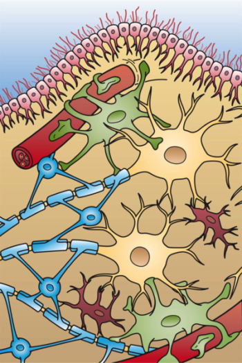
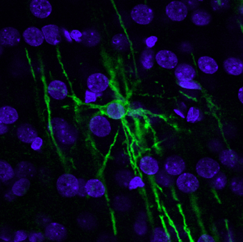
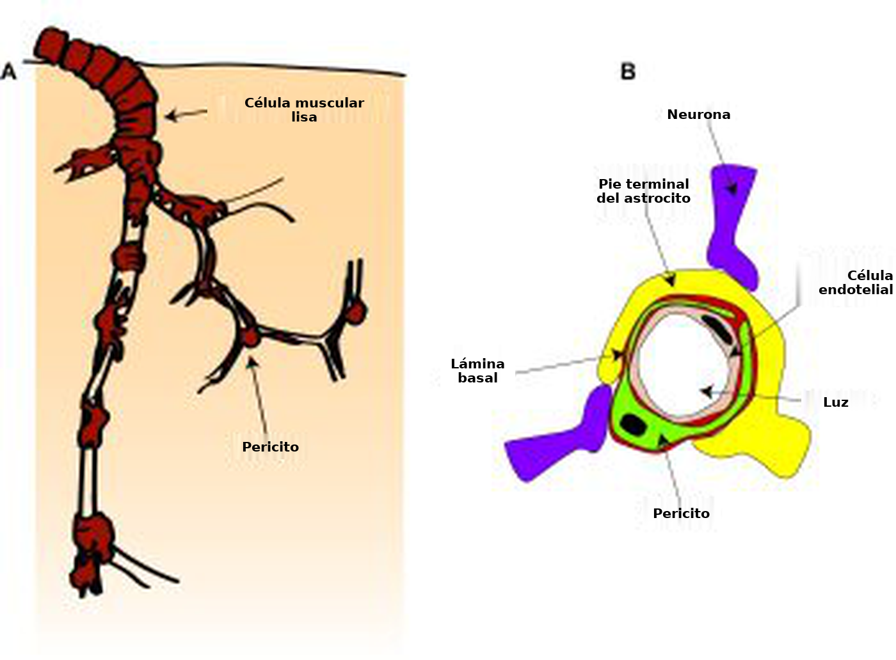
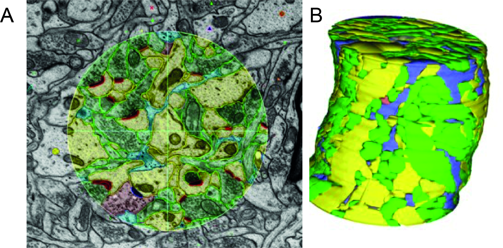

Bajo el microscopio: células del sistema nervioso
Objetivos de aprendizaje
Al finalizar este capítulo, vas a conocer:
- las principales células del sistema nervioso
- el aspecto de estas células
- cuáles son sus funciones.
En cada región del sistema nervioso central y del sistema nervioso periférico hay células especializadas que realizan o respaldan la función fundamental del sistema nervioso: detectar información sobre el mundo, integrarla con información sobre el estado interno del cuerpo y la experiencia pasada, y generar una conducta adecuada. En términos generales, estas células pueden clasificarse como neuronas o glía.
Las neuronas son las células que se encargan de la señalización y del procesamiento de la información. Detectan entradas, integran información y envían señales a otras células, ya sean otras neuronas (con las que forman circuitos neuronales) o células no neurales (como las musculares o endocrinas), para producir un efecto conductual o fisiológico. La glía, o las células gliales, cumple numerosas funciones de apoyo a las neuronas. En un principio se pensó que este apoyo era estructural —el término «glía» deriva de la palabra griega para «pegamento»—, pero en la actualidad se sabe que es muy complejo: implica una comunicación dinámica entre la glía, las neuronas y otros tipos celulares, y puede modular la comunicación neuronal. Además de neuronas y glía, el tejido neural contiene una gran cantidad de células vasculares. Como vimos en el capítulo 2, Exploración del cerebro: recorrido por las estructuras del sistema nervioso, el tejido cerebral está densamente vascularizado para aportar suficientes metabolitos y permitir que las neuronas, que consumen mucha energía, funcionen correctamente.
Neuronas

La forma básica de una neurona se muestra en la Fig. 2.24. Posee un cuerpo celular, o soma, con prolongaciones ramificadas llamadas dendritas y una prolongación delgada llamada axón. El axón también puede ramificarse y formar colaterales axónicas. En el capítulo anterior (Exploración del cerebro: recorrido por las estructuras del sistema nervioso) señalamos que la función general del cerebro consiste en recibir información, procesarla para determinar qué hacer a continuación y, luego, generar una salida. Como se mencionó antes, las neuronas individuales también cumplen esta misma función de «entrada-procesamiento-salida».
Las dendritas, o árbol dendrítico, reciben la mayoría de las entradas de la célula. Estas entradas se integran en todo el árbol dendrítico y el soma antes de que la célula «decida» si son lo bastante intensas como para desencadenar una señal eléctrica de salida que recorra el axón (el potencial de acción; véaseTransmisión neuronal). Esta decisión se produce en la parte del axón más alejada de las terminales, denominada segmento inicial del axón. El potencial de acción se desplaza por el axón hasta la terminal axónica. Esta terminal se encuentra muy cerca de una dendrita de otra célula, pero no llega a tocarla. Este diminuto espacio está especializado en transmitir mensajes entre dos células y se denomina sinapsis. En la sinapsis, los potenciales de acción provocan la liberación de un mensajero químico —un neurotransmisor— que transmite la señal a través del espacio hasta la siguiente célula del circuito.
La morfología neuronal influye en el procesamiento
Todas las neuronas presentan esta morfología básica, aunque tienen una gran variedad de formas y tamaños.

La mayoría son neuronas multipolares, con un árbol dendrítico ramificado y un único axón. Algunas neuronas, en particular las neuronas sensitivas (por ejemplo, las de la retina), son bipolares: tienen una sola dendrita que parte de un extremo del soma y un solo axón que parte del otro (aunque ambos pueden ramificarse cerca de sus extremos). Las neuronas seudounipolares poseen una única prolongación, clasificada como axón, que recibe entradas en un extremo y libera neurotransmisores en el otro. Estas diferencias de forma y tamaño modifican el modo en que las neuronas procesan la información.

Dado que la función de una neurona es integrar todas sus entradas y decidir si genera un potencial de acción de salida, la cantidad y la ubicación de esas entradas afectan el modo en que se produce esta sumación.
Por ejemplo, en el cerebelo (Figura 2.12), las células de Purkinje reciben entradas de los axones de las células granulosas y de unos axones provenientes de los núcleos cerebelosos profundos ubicados en el puente, denominados fibras trepadoras.
Las fibras trepadoras están muy ramificadas y establecen numerosas conexiones (sinapsis) con cada célula de Purkinje, mientras que los axones de las células granulosas, denominados fibras paralelas, son simples y forman una sola sinapsis con cada célula de Purkinje. Esto significa que la conexión entre una célula granulosa individual y una célula de Purkinje es más débil que la conexión entre la neurona de la fibra trepadora y la célula de Purkinje.
Otra forma en que la morfología de una neurona puede afectar los cómputos que realiza se observa al examinar las dendritas en detalle (Figura 2.27).

Algunas dendritas están cubiertas de pequeñas protrusiones, denominadas espinas dendríticas, mientras que otras son lisas. Las sinapsis pueden formarse sobre la espina o sobre el cuello de la espina; esto permite que algunas entradas «regulen» el efecto de otras y modifiquen su impacto sobre la neurona.
Distintas clases de neuronas
Las neuronas pueden clasificarse y subdividirse de muchas maneras, según el aspecto de la función neuronal en el que se centre el análisis. Como vimos antes, es posible definir las neuronas por su morfología, que también permite clasificar con mayor detalle la gran variedad de neuronas multipolares. Por ejemplo, las células piramidales tienen un soma característico de forma piramidal, una dendrita larga orientada hacia arriba (una dendrita apical), dendritas basales con forma de penacho y un axón que suele formar varias colaterales. Las células de Purkinje del cerebelo tienen un soma redondeado, un árbol dendrítico plano y muy ramificado en la parte superior del soma, y un único axón largo. Las células granulosas tienen un cuerpo celular pequeño, un árbol dendrítico simple y un axón que se bifurca. Las células en candelabro presentan una arborización axónica muy ramificada que forma conexiones características semejantes a «velas» con los segmentos iniciales de numerosos axones.

También podemos definir las neuronas por su efecto sobre otras neuronas: son excitatorias o inhibitorias según aumenten o disminuyan la probabilidad de que las neuronas con las que se conectan generen un potencial de acción (este tema se aborda con más detalle en el Transmisión neuronal).
Entre los ejemplos anteriores, las células piramidales y las células granulosas son excitatorias, mientras que las células de Purkinje y las células en candelabro son inhibitorias. Las neuronas también pueden clasificarse según el tipo de neurotransmisor que liberan: las neuronas glutamatérgicas liberan glutamato, las neuronas GABAérgicas liberan GABA (ácido gamma-aminobutírico), las neuronas dopaminérgicas liberan dopamina, y así sucesivamente. Como veremos más adelante, estas categorías se superponen en gran medida: las neuronas glutamatérgicas son excitatorias porque el glutamato excita las células, y las neuronas GABAérgicas son inhibitorias porque el GABA inhibe las células. Sin embargo, otros neurotransmisores, como la dopamina, pueden producir distintos efectos posteriores según las proteínas que la célula exprese en la sinapsis.
Las neuronas también pueden clasificarse por su conectividad y su función en un circuito, ¡pero esto puede volverse complejo! Las neuronas que se proyectan a larga distancia hacia otra región cerebral se denominan neuronas principales, mientras que las que se proyectan localmente se denominan interneuronas. Las neuronas principales suelen ser excitatorias, aunque no siempre (por ejemplo, las células de Purkinje transmiten información desde el cerebelo y son inhibitorias). Sin embargo, en algunas áreas cerebrales resulta difícil decidir si una célula debe considerarse una interneurona. ¿Resulta útil denominar «células principales» a las células piramidales neocorticales que se proyectan hacia áreas corticales lejanas, pero llamar «interneuronas» a células muy similares que se proyectan hacia la columna cortical contigua? ¿Son interneuronas las células granulosas cerebelosas porque se proyectan dentro del cerebelo, aunque lo hagan hacia una capa celular distinta? En la práctica, el término «interneurona» suele utilizarse únicamente para las células inhibitorias, denominadas interneuronas inhibitorias. Una célula en candelabro es un ejemplo de interneurona inhibitoria. En cambio, las células excitatorias de los circuitos locales suelen designarse por otras características, como la ubicación y la morfología (por ejemplo, una célula piramidal neocortical de la capa 5, en contraste con una célula piramidal de las capas 2/3 del ejemplo anterior).
Glía
Existen cinco tipos principales de células gliales.


Los astrocitos también pueden liberar numerosas sustancias sobre las neuronas y otras células (por ejemplo, ATP, lactato y glucosa), lo que modula su actividad y les brinda apoyo metabólico. Unas prolongaciones especializadas de los astrocitos, denominadas «pies terminales», se comunican con los vasos sanguíneos locales, modifican el flujo sanguíneo local y captan glucosa de la sangre. Estos pies terminales rodean los vasos sanguíneos y forman parte de la barrera hematoencefálica (BHE); otros se extienden hasta la superficie del encéfalo y forman una capa delgada justo debajo de la piamadre. Esta barrera de pies terminales de astrocitos se denomina glía limitante e impide (o regula) la entrada o salida de moléculas y células del tejido nervioso. Los astrocitos también reaccionan al daño del tejido cerebral: se «activan» y expresan distintas moléculas cuando están expuestos a una infección. Pueden formar una cicatriz alrededor de las zonas dañadas. Aunque esto puede ser beneficioso, también genera problemas si las células permanecen activadas durante mucho tiempo, ya que el tejido cicatricial resultante puede impedir que las neuronas establezcan nuevas conexiones a través de él.
Los oligodendrocitos y las células de Schwann cumplen funciones similares en el SNC y el SNP, respectivamente. Ambos tipos celulares envuelven los axones neuronales con capas de una sustancia grasa denominada mielina. Los oligodendrocitos lo hacen enviando múltiples prolongaciones mielinizantes hacia los axones cercanos, mientras que cada célula de Schwann del SNP posee una sola prolongación mielinizante. Estas capas de mielina aíslan los axones y permiten que los potenciales de acción se conduzcan con mayor rapidez y fiabilidad (véase el Transmisión neuronal).

Debido a su estrecha asociación con los axones, los oligodendrocitos y las células de Schwann también brindan apoyo a estas estructuras mediante la liberación de algunas moléculas y la captación de otras. De este modo, regulan el entorno extracelular que rodea los axones de manera similar a la función que cumplen los astrocitos en las sinapsis. En la esclerosis múltiple, las células inmunitarias del organismo parecen atacar a los oligodendrocitos, lo que provoca la desmielinización de los axones. Esto altera la transmisión de señales en los axones que estaban recubiertos por las células dañadas y causa diversos problemas neurológicos, según cuáles sean los axones afectados y qué señales transmitían.
.jpg")
La microglía está formada por células pequeñas que cumplen una función importante en la reparación del tejido cerebral dañado. A diferencia de lo que ocurre en el resto del organismo, las células inmunitarias no pueden ingresar con facilidad desde la sangre al encéfalo porque la BHE se lo impide. En su lugar, la microglía actúa como la célula inmunitaria residente del encéfalo. Sus prolongaciones se extienden y retraen constantemente mientras exploran el encéfalo en busca de signos de daño o infección. Cuando encuentran una zona dañada, se «activan» y migran hacia ella; allí forman una barrera entre el tejido sano y el dañado, y eliminan los restos de las células que están muriendo. La microglía también suele estar asociada con las sinapsis y los vasos sanguíneos. Cada vez se reconoce más que cumple funciones importantes no solo en el control del daño, sino también en la configuración del funcionamiento cerebral habitual, mediante la regulación de la transmisión sináptica y la señalización hacia los vasos sanguíneos. Al igual que ocurre con los astrocitos, aunque las respuestas de la microglía al daño suelen considerarse beneficiosas, pueden volverse perjudiciales si permanecen activadas durante mucho tiempo. Esto puede suceder en enfermedades como la de Alzheimer y después de un accidente cerebrovascular.
El último tipo de célula glial es la célula ependimaria, que analizamos brevemente en el capítulo anterior. Estas células revisten los ventrículos y producen LCR.
Células vasculares
En el capítulo anterior vimos que el encéfalo contiene una densa red vascular que le proporciona un suministro constante y estrictamente regulado de energía (principalmente oxígeno y glucosa). Las células principales que componen los vasos sanguíneos son las células endoteliales, que forman la pared vascular en contacto con la sangre, y las células murales vasculares: células musculares lisas en los vasos de mayor calibre (arterias y arteriolas) y pericitos en los vasos de menor calibre (capilares), que rodean las células endoteliales (Figura 2.33).

Como vimos antes, las células endoteliales forman uniones estrechas con las células endoteliales adyacentes y con los pericitos, y así constituyen la BHE. Una función principal de las células endoteliales consiste en regular el ingreso de células y moléculas a través de la BHE, además de eliminar del encéfalo moléculas de desecho y conducirlas hacia la sangre. Regulan la entrada de moléculas pequeñas mediante la expresión de distintas proteínas transportadoras que permiten que ciertas moléculas atraviesen la BHE e ingresen al encéfalo. Para permitir la entrada de células inmunitarias al encéfalo, las células endoteliales expresan proteínas que se adhieren a las células inmunitarias presentes en la sangre; estas luego se desplazan entre las células endoteliales o a través de ellas.
Otra función de las células endoteliales es controlar el flujo sanguíneo. Estas células pueden responder a señales presentes en la sangre o en el encéfalo mediante la producción de moléculas que contraen o dilatan las células musculares lisas o los pericitos, lo que modifica el diámetro de los vasos sanguíneos y el flujo de sangre.
Las células musculares lisas tienen forma de anillo y rodean el vaso, mientras que los pericitos poseen un cuerpo celular definido y prolongaciones que se extienden a lo largo y alrededor del vaso sanguíneo. Además de responder a las señales de las células endoteliales, estas células musculares lisas y los pericitos también pueden contraerse y dilatarse en respuesta a señales de las neuronas y los astrocitos. De este modo, ajustan el flujo sanguíneo a los cambios en la actividad neuronal. Los pericitos también son importantes para estabilizar los vasos sanguíneos recién formados y trabajan junto con las células endoteliales para controlar la BHE.
¡El encéfalo está lleno!
Todas estas células, con sus complejas estructuras, suelen representarse en ilustraciones con mucho espacio entre ellas. Sin embargo, en realidad, las prolongaciones de las distintas células están estrechamente entrelazadas y compactadas, y ocupan casi todo el espacio disponible. Esto puede observarse experimentalmente mediante reconstrucciones tridimensionales obtenidas a partir de micrografías electrónicas: imágenes de cortes secuenciales de una porción muy pequeña de tejido tomadas con un microscopio electrónico.

En estas secuencias de imágenes, se pueden etiquetar y rastrear las estructuras en cada imagen y luego ensamblarlas para obtener una reconstrucción de las distintas células presentes en un pequeño volumen de tejido. Estas imágenes permiten observar con extraordinario detalle cómo se conectan las distintas estructuras; por ejemplo, con qué dendritas establece contacto un axón. Sin embargo, rastrear y reconstruir cada prolongación, incluso en un volumen pequeño, requiere enormes recursos computacionales, y todavía no es posible hacerlo ni siquiera para una columna cortical completa, mucho menos para un cerebro o una región cerebral enteros.
Ideas clave: células del sistema nervioso
Todas las neuronas tienen un soma, un axón y dendritas, pero presentan una gran variedad de formas y tamaños y producen diferentes moléculas neurotransmisoras, lo que les permite realizar muchos tipos de cómputos.
En el cerebro hay cinco tipos diferentes de glía (astrocitos, oligodendrocitos, células de Schwann, microglía y células ependimarias), que cumplen numerosas funciones, entre ellas:
- controlar el entorno extracelular de las neuronas (astrocitos, oligodendrocitos, células de Schwann, microglía)
- proporcionar sostén físico y metabólico (astrocitos, oligodendrocitos, células de Schwann)
- aislar los axones para permitir una transmisión neuronal rápida (oligodendrocitos, células de Schwann)
- detectar y combatir las infecciones y el daño tisular (microglía, astrocitos)
- establecer contacto y comunicarse con los vasos sanguíneos (astrocitos, microglía)
- producir LCR (células ependimarias)
Las células endoteliales, las células musculares lisas y los pericitos forman una densa red de vasos sanguíneos y controlan tanto el suministro de energía del cerebro como qué células y moléculas pueden pasar entre la sangre y el tejido cerebral.